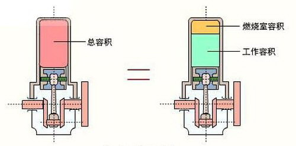

汽车性能参数名词解释之 发动机参数篇
1名词分析——压缩比
在之前的文章中，我们已经对数据库中所涉及的车身参数和发动机前十项参数做了较为详细的解析，本文将从第十一项开始，继续对发动机的其余参数进行详解：
■ 压缩比
压缩比就是发动机混合气体被压缩的程度，用压缩前的气缸总容积与压缩后的气缸容积（即燃烧室容积）之比来表示。为了能更直观全面的了解，我们还需要明白以下几个相关的概念。

往复式发动机：
简单地讲，就是在发动机气缸中，有一只活塞周而复始地做着直线往复运动，且一直循环不已。在周而复始又持续不断的工作行程之中有其一定的运动行程范围。
最大行程容积与最小行程容积：
就发动机某个气缸而言，当活塞的行程到达最低点，此时的位置点便称为下止点，整个气缸包括燃烧室所形成的容积便是最大行程容积。当活塞反向运动，到达最高点位置时，这个位置点便称为上止点，所形成的容积为整个活塞运动行程是最小行程容积。
压缩比的表示和范围：
压缩比就是这最大行程容积与最小容积的比值。常见的汽油发动机压缩比表示方法为9.0：1、9.5：1或10.5：1等。汽油发动机压缩比一般是8－11，柴油发动机压缩比一般是18－23。
压缩比与发动机性能的关系：
压缩比越高就意味着发动机的动力越大。通常低压压缩比一般在10以下，高压压缩比在10以上。目前所知汽油发动机的压缩比最高已经达到了12：1。
压缩比与冷却系统的关系：
发动机的运转正常的工作温度都设计在80—110℃之间。压缩比太高可能会导致汽油自燃、预燃，而引起爆震的发生，使发动机无力、损坏机械元件。所以，在提升压缩比的同时又能使发动机保持正常的工作温度是至关重要的。
发动机冷却系统
爆震：
正常燃烧是由火花塞的电极间隙附近形成火焰核心，此火焰燃烧速度为30—40米/秒。而爆震则是远离火花塞的末端未燃混合气经过压缩后达到自燃温度，自身产生火焰提前引燃，此火焰燃烧速度为200—1000米／秒以上。比正常燃烧的火焰传播速度高几十倍，很容易造成发动机损坏。
压缩比与90号、93号、97号汽油：
汽油发动机压缩比越高，引发爆震的可能性越大。我们通常说的标号90号、93号、97号汽油，标号越高，辛烷值越高，抗爆性能就越强，当然价钱也越贵。
增压与可变压缩比：
增压就是将空气预先压缩然后再供入气缸，以期提高空气密度、增加进气量的一项技术。现今运用在汽车的增压系统有两大主流：机械增压、涡轮增压。发动机在低速时，增压作用滞后，等发动机加速至一定转速后，增压系统会开始工作，在同等行程容积下，空气密度的提升就相当于压缩比的提高。
机械增压
压缩比与环保：
众所周知，发动机气缸的压缩比高时，燃烧的温度也相对的升高，则排放出来的废气中氮氧化合物的含量也就增加，会引起污染。如何才能达到动力与环保的最佳平衡点，也是现今发动机技术的着重研究课题。
2名词分析——汽缸
■ 汽缸数
汽缸：
举个简单的例子，见过医院打针用的针管吧？里面推药的是活塞，那个外壳就可以看做是汽缸。按照冷却方式分为水冷发动机气缸体和风冷发动机气缸体。
汽缸数：
汽车发动机常用缸数有3、4、6、8、10、12、16缸。一般家用轿车发动机采用4缸居多，售价多在20万以下。6缸以上的车型售价基本都高于20万元。
而8缸甚至更多缸数的发动机则是被中大型豪华车和超级跑车所采用。这其中，具备1001匹马力的布加迪威龙就是16缸发动机的典型代表车型。
布加迪威龙
汽缸数与发动机性能的关系：
一般来说，在同等缸径下，缸数越多，排量越大功率越高，也就是最高速越高。在同等排量下，缸数越多，缸径越小，转速越高扭矩越大，也就是加速度越快。
■ 每缸气门数
气门：
指汽缸的进气门和排气门。进气门直接连接进气歧管是发动机用来吸入混合气（或新鲜空气）的入口；排气门则连接着排气歧管，是发动机排出燃烧废气的出口。
每缸气门数：
是指发动机每个汽缸所拥有的气门数，有两气门，三气门，四气门和五气门几种。达到或超过六气门不仅使配气结构过于复杂，还会导致发动机寿命缩短，气门开启的空间帘区(气门的圆周和气门的升程)也较小，效率下降。因此，四气门技术目前使用最为普遍。
气门数与发动机性能的关系：
一般来说，同等排量情况下，气门越多，进排气效率越好，就像一个人跑步，累得气喘吁吁时，需要张大嘴巴呼吸。排量较大、功率较大的发动机要采用多气门技术。
汽缸和气门数可以作为判断发动机优劣的标准之一，但不是唯一标准。宝马公司的直列4缸2.0升发动机，由于其独特的可变气门技术，在功率和扭矩输出上丝毫不逊于普通的6缸机，这也是宝马318轿车动力性广受好评的原因。奔驰公司长期采用每缸3气门技术，也达到了很好的功率、扭矩和环保水平。
3凸轮轴和气门的布置
■ 凸轮轴和气门的布置
凸轮轴：
凸轮轴是活塞发动机里的一个部件。它的作用是控制气门的开启和闭合动作。其材质一般是特种铸铁，偶尔也有采用锻件的。凸轮轴的主体是一根与汽缸组长度相同的圆柱形棒体。上面套有若干个凸轮，用于驱动气门。凸轮轴的一端是轴承支撑点，另一端与驱动轮相连接。
凸轮：
凸轮侧面呈鸡蛋形，目的在于保证汽缸充分的进气和排气。一般来说直列式发动机中，一个凸轮都对应一个气门，V型发动机或水平对置式发动机则是每两个气门共享一个凸轮。而转子发动机和无阀配气发动机由于其特殊的结构，并不需要凸轮。
凸轮轴和气门的布置：
在以前很长的一段时间里，底置式凸轮轴在内燃机中最为常见。而现在大多数量产车的发动机配备的是顶置式凸轮轴。
顶置式气门与顶置凸轮轴(OHC)：
发动机的凸轮轴安装位置有下置、中置、顶置三种形式。轿车发动机由于每分钟转速可达5000转以上，为保证进排气效率，都采用进气门和排气门倒挂的形式，即顶置式气门装置。
现代轿车发动机将凸轮轴配置在发动机的上方，相比中、下置更为合理。既缩短了凸轮轴与气门之间的距离，又省略了气门的挺杆和挺柱，将发动机的结构变得更加紧凑。更重要的是，这种安装方式可以减少整个系统往复运动的质量，提高了传动效率。

顶置凸轮轴分类：
按凸轮轴数目的多少，一般可分为单顶置凸轮轴(SOHC)和双顶置凸轮轴(DOHC)两种比较常见，当然还有制作工艺更复杂的四顶置凸轮轴。
单顶置凸轮轴(SOHC)就是Single Overhead Camshaft。在双顶置凸轮轴出现之前，就叫OHC，单顶置凸轮轴的凸轮轴置于汽缸顶部，在气门之上。有些还配有可变正时凸轮用来调整发动机扭矩曲线，满足不同的使用要求。
双顶置凸轮轴(DOHC)就是Double Overhead Camshaft。每个汽缸头有两个曲轴，V型汽缸因为分坐左右两块，就会总共有4个曲轴，这样对每缸4气门的设计就很便利，同时发动机也可达到更高的转速。而气门的位置更有利于高马力输出，但是这样的设计，其缺点就是重量加大，构造复杂且较昂贵。
四种常见的气门和凸轮轴布置：
第一种：顶置气门，侧置凸轮轴。即凸轮轴在气缸侧面，由正时齿轮直接驱动。由于此布置必须使用气门挺杆来传递动力，往复运动的零件较多，惯性质量大，容易引起振动，所以现在已经基本不采用这种布置了。
如今比较常见的两种布置类型是：顶置气门，顶置凸轮轴(SOHC)和顶置气门，双顶置凸轮轴(DOHC)。
这两种顶置气门布置各有优势，单顶置凸轮轴(SOHC)的成本要低于双顶置凸轮轴(DOHC)。单顶置凸轮轴(SOHC)在低转速的马力较好，比较适合市区行车；而双顶置凸轮轴(DOHC)则在高转速时马力较佳，比较适合高速行驶。汽车厂商会根据发动机成本预算和车型受众对象的不同来选择相应布置，所以我们并不能单纯以发动机的排量大小、车型的分类或是车价的高低来简单界定单还是双顶置凸轮轴。
例如比亚迪F0，虽然是发动机只有1.0L排量微小型车，但使用的就是顶置气门，双顶置凸轮轴。而本田第八代雅阁中的2.0车型考虑到各方面因素，发动机所用的是顶置气门，单顶置凸轮轴也很正常。不过，就未来的发展趋势而言，顶置气门，双顶置凸轮轴将是更为主流的布置。
第四种：顶置气门，四顶置凸轮轴。这是一种更高端的布置，一般用在采用V型或W型发动机的顶级跑车上面。像世爵C8就是典型的四顶置凸轮轴代表车型。
4缸径与行程
■ 缸径×行程(mm)
缸径、行程：
缸径是气缸的直径。行程是活塞运动行程上止点和下止点的距离。发动机工作时活塞在汽缸中往复运动，从汽缸的一端到另一端的距离叫做一个行程。也叫冲程。
缸径×行程：
缸径×行程﹙Bore×Stroke﹚所得到的乘积，就是单缸的排气量。再乘以汽缸数目，所得到的乘积，就是整具发动机的排气量。
四冲程发动机：
按发动机在一个工作循环期间活塞往复运动的行程数，分为四冲程和二冲程发动机。在一个工作循环中活塞往复四个行程的内燃，称作四冲程往复活塞式内燃机，完成进气、压缩、作功和排气四个过程叫一个工作循环。而活塞往复两个行程完成一个工作循环的则称作二冲程往复活塞式内燃机。
“大缸径×短行程”与“小缸径×长行程”：
在排气量不变的前提下“大缸径×短行程”的设计，缺点是在发动机室里会占掉比较大的地方。优点是行程短，发动机高度低，整车的重心低，对高速稳定度、操控表现都有助益。
相对的，“小缸径×长行程”的设计优点是发动机占用空间小，车头有机会设计得较短，把宝贵的空间让出来给乘客。缺点是发动机的高度会变高，车头降低风阻和流线造型的设计不容易实现。
“缸径×行程”与发动机性能的关系：
“小缸径×长行程”峰值扭力出现的转速会比较低，适于低转速马力发动机，起步加速快。这是因为活塞每在汽缸内跑一次的行程较长，因此产生的动力加速度较高，扭力也就容易变大！用最简单的解释，就好比拳击手，直拳比刺拳有力，勾拳又会比直拳有力，是因为出拳前行程较长的缘故。
反之，“大缸径×短行程”设计的发动机，因为活塞的每个行程较短，产生的动力加速度较低，因此必须靠多跑几次才能获得等量的力道输出，适于高转速马力发动机，更高的极限速度是它的专长。而想要起步加速快的话，就只能靠提高发动机转速来实现了。
■ 排放水平
排放水平是指从发动机排出的废气中CO(一氧化碳)、HC＋NOx(碳氢化合物和氮氧化物)、PM(微粒，碳烟)等有害气体不得高于国家规定的标准。从2004年1月1日起，北京对机动车的尾气排放标准由欧洲I号改为欧洲II号，到2008年，正式实施欧洲III号标准。
欧洲I号标准：
汽油车一氧化碳不得超过3.16克/公里，碳氢化合物不得超过1.13克/公里。柴油车的颗粒物标准不得超过0.18克/公里，耐久性要求为5万公里。
欧洲II号标准：
汽油车一氧化碳不超过2.2克/公里，碳氢化合物不超过0.5克/公里。柴油车一氧化碳不超过1.0克/公里，碳氢化合物不超过0.7克/公里，颗粒物不超过0.08克/公里。
欧洲III号标准（等同于国三）：
汽车排放从欧Ⅱ到欧Ⅲ，不是像欧Ⅰ到欧Ⅱ那样简单，提升幅度大了很多。欧Ⅲ排放标准比欧Ⅱ在NEDC和燃油蒸发排放检测项目上的内容有所变化，欧Ⅲ标准中增加了低温HC/CO排放检测、车载诊断系统检测和在用车排放检测。从欧Ⅱ到欧Ⅲ执行不同的排放控制技术，欧Ⅱ排放标准只要求三元催化器及发动机改进措施两项，而欧Ⅲ排放则还包括改进的催化转化器涂层、催化剂加热及二次空气喷射。可以看出，欧Ⅲ排放控制技术要比欧Ⅱ复杂和困难得多。
欧洲Ⅳ号标准：
欧洲Ⅲ号标准污染物排放限值比Ⅱ号标准降低约30%，而Ⅳ号标准则降低60%。7辆执行欧Ⅱ标准的汽车，相当于1辆化油器车的污染物排放量；14辆执行欧Ⅲ标准的汽车，才相当于1辆化油器车的污染物排放量；而欧Ⅳ标准要求更高，更臻完美。
排放水平与标识：
排放水平达到欧Ⅱ与欧Ⅲ但是不带OBD的车辆，是二星绿色车标，达到欧Ⅲ标准带OBD的车辆发三星绿色车标，现在的新车上牌照都要求达到欧Ⅳ标准，是四星绿色车标。
北京地区从2008年1月1日起就已出台政策规定，所有新车上牌照必须要达到欧Ⅳ标准。
■ 燃料类型
汽油发动机与柴油发动机：
汽油发动机是以汽油作为燃料的发动机。优点是转速高，结构简单，质量轻，造价低廉，运转平稳，使用维修方便。缺点是热效率低于柴油机，油耗较高，点火系统比柴油机复杂，可靠性和维修的方便性也不如柴油机。
柴油发动机是燃烧柴油来获取能量释放的发动机。优点是功率大、经济性能好，适合于载货汽车的使用。缺点是成本较高，振动噪声大，冬季冷车时起动困难。
90号、93号、95号、97号、98号汽油：
汽油是由C4~C10各族烃类组成，外观为透明的液体。按研究法辛烷值分为90号、93号、95号三个牌号。目前市场上所见到的97号、98号汽油产品执行的产品标准均为企业标准。
标号代表辛烷值，辛烷值越高，抗爆性能就越好，燃烧完全、积炭少，具有较好的安定性，在贮运和使用过程中不易出现氧化变质，对发动机部件及储油容器无腐蚀性。
汽油选用的原则：
一般来说，压缩比为7—8的汽油机应选用90号汽油；压缩比在8以上的汽油机应选用93号或97号汽油。价格越昂贵的汽车发动机工艺越复杂，应使用标号97或更高的汽油。
需要说明的一点是，在某些特殊情况下，如在较高海拔行驶或是需要大负荷、大扭矩拖挂车辆货物的时候，发动机容易产生爆震，应选用较高辛烷值的汽油。
无铅汽油：
无铅汽油是一种在提炼过程中没有添加铅的汽油，一般每升汽油只含有百分之一克来源于原油中微量的铅。无铅汽油比普通汽油更为环保，从2000年起在全国范围内就开始推广使用无铅汽油了。
天然气：
与石油等能源相比，天然气在燃烧过程中产生的能影响人类呼吸系统健康的物质极少，产生的二氧化碳仅为煤的40%左右，产生的二氧化硫也很少。以天然气代替汽车用油，天然气燃烧后无废渣、废水产生，具有价格低、使用安全、热值高、洁净等优势。
氢气：
当今世界开发新能源迫在眉睫，原因是目前所用的能源如石油、天然气、煤，均属不可再生资源，地球上存量有限，而人类生存又时刻离不开能源，所以必须寻找新的能源。
氢能是一种二次能源，它是通过一定的方法利用其它能源制取的，作为一种理想的新的合能体能源，氢能源的优点非常多，最大的特点是环保而且取之不尽，只是由于成本较高，一时还难以普遍使用。
5机油与防冻液的作用
■ 机油容积(L)
机油，即发动机润滑油，被誉为汽车的“血液”，能对发动机起到润滑、清洁、冷却、密封、减磨等作用。
黄色部分为机油箱
机油品质的分类：
机油的识别有质量等级(API)和粘度(SAE)两种标准。API机油分为两类：“S”开头系列代表汽油发动机用油，规格有：SA、SB、SC、SD、SE、SF、SG、SH、SJ、SL。“C”开头系列代表柴油发动机用油,规格有：CA、CB、CC、CD、CE、CF、CF—2、CF—4、CG—4、CH—4、CI—4。当“S”和“C”两个字母同时存在，则表示此机油为汽柴通用型。
在S或C后面的字母越靠后，质量等级越高，国际品牌中机油级别多是SF级别以上的。
相关阅读：告诉你不知道的—国内润滑油品牌大汇总
■ 防冻液容积(L)
防冻液的全称应该叫防冻冷却液，意为有防冻功能的冷却液。防冻液不仅仅是冬天用的，它应该在全年使用。优质防冻冷却液的沸点通常在零上110摄氏度，在夏季使用，防冻冷却液比水更难开锅。而且可以防垢、防腐和除锈。
棕色方盒为防冻冷却液箱
防冻液使用注意：
注意一：尽量使用同一品牌的防冻液。 不同品牌的防冻液其生产配方会有所差异，如果混合使用，多种添加剂之间很可能会发生化学反应，造成添加剂失效。
注意二：防冻液的有效期多为两年（个别产品会长一些），添加时应确认该产品在有效期之内。
注意三：必须定期更换，一般为两年或每行驶4万公里更换一次，出租车应该更换得勤一些。 更换时应放净旧液，将冷却系统清洗干净后，再换上新液。
注意四：避免兑水使用。 传统的无机型防冻液不可以兑水使用，那样会生成沉淀，严重影响防冻液的正常功能。 有机型防冻液则可以兑水使用，但水不能兑得太多。
■ 缸盖材质
缸盖安装在缸体的上面，从上部密封气缸并构成燃烧室。它经常与高温高压燃气相接触，因此承受很大的热负荷和机械负荷。缸盖一般采用铸铁或铝合金材质，由于铝合金的导热性好，有利于提高压缩比，所以近年来铝合金气缸盖被采用得越来越多。
铝合金：
以铝为基的合金总称。主要合金元素有铜、硅、镁、锌、锰，次要合金元素有镍、铁、钛、铬、锂等。铝合金密度低，但强度比较高，接近或超过优质钢，塑性好，可加工成各种型材，具有优良的导电性、导热性和抗蚀性，工业上广泛使用，使用量仅次于钢。
■ 缸体材质
铸铁发动机与铝合金发动机：
当前，汽油发动机的缸体分铸铁和铝合金两种。在柴油发动机中，铸铁缸体占绝大部分。
铝合金缸体的优点是重量轻，相对于铸铁缸体而言，铝合金缸体可以减轻发动机的重量，降低油耗。在同等排量的发动机中，使用铝缸体发动机，能减轻20公斤左右的重量。汽车的自身重量每减少10％，燃油的消耗可降低6%—8%。
铸铁缸体的优点是体积较小，价格较铝合金缸体便宜，耐腐蚀性较高，热负荷能力强，尤其是在发动机的升功率方面铸铁的潜力更大。打个比方，一台1.3升排量铸铁发动机的输出功率可以超过70kW，而一台铝合金发动机的输出功率只能达到60kW。铝合金缸体发动机内部仍然有一部分使用铸铁材料，特别是气缸，要使用铸铁材料。
在生产过程中，铸铁缸体和铝合金缸体也有很多不同。铸铁生产线占地面积大，对环境污染大，加工工艺复杂；而铝合金缸体的生产特点恰好相反，从市场竞争的角度来说，铝合金缸体具有一定的优势。但当汽车的发动机体积要求较小时，使用铝合金缸体就很难达到铸铁缸体的强度。所以说，高增压的发动机大多采用铸铁缸体。